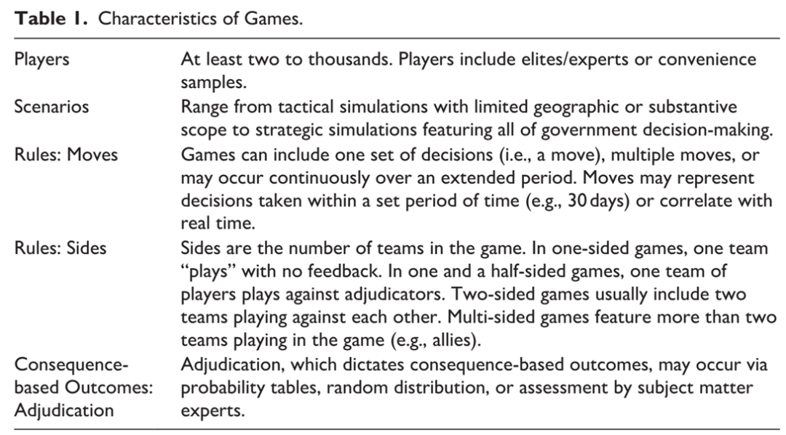
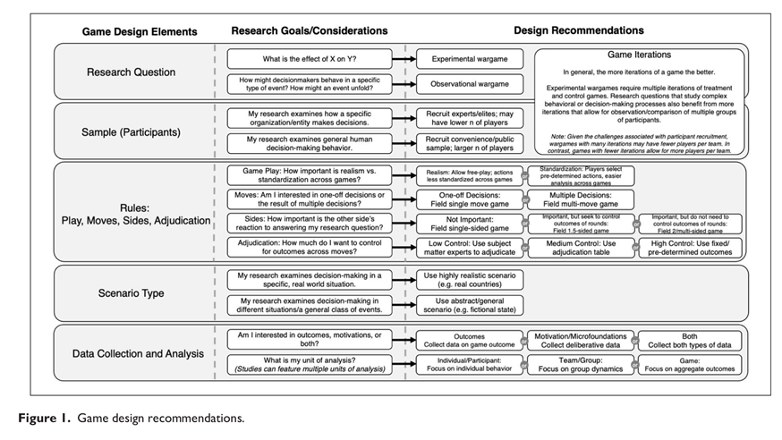

收录于合集

国际关系研究中的兵棋推演
作者： 埃里克·林格林堡（Erik Lin-Greenberg）是美国麻省理工学院政治学助理教授；Reid B.C. Pauly是美国布朗大学政治学助理教授，沃森国际和公共事务研究所核安全与政策系助理教授；Jacquelyn G. Schneider是美国斯坦佛大学胡佛研究所研究员。
编译： 赵旌宏（国政学人编译员，吉林大学世界史系博士研究生）
来源： Erik Lin-Greenberg, Reid B.C. Pauly and Jacquelyn G. Schneider. Wargaming for International Relations research, European Journal of International Relations , 28:1(2022): 83-109.
导读
本文探讨的核心主题是对国际关系研究而言既古老又新颖的调查研究方法——兵棋推演（ wargaming /wargames ）。言其古老，在于兵棋推演于古罗马和早期的伊拉克、中国时便已出现，并在现代战争中得到了较为充分的运用（如两次世界大战中的模拟海战或冷战时期的核使用和援助决策模拟等）；言其新颖，则在于近年来政治学家在研究中融入兵棋推演（数据）的兴趣趋势，研究人员通过开发兵棋推演或借助档案性质的兵棋推演资料来探索那些难察证据且数据匮乏的罕见事件或主题议题。然而，就将这种新方法应用于政治学研究而言，学者们却鲜有指导性的方案或建议。因此， 本文对政治学家如何将兵棋推演作为学术调查方法进行评估，并着手为国际关系中的兵棋推演建构了研究议程。
本文通过突出强调心理学研究概念——生态效度，将兵棋推演同其他方法论区分开来，并介绍了研究人员如何建构和运行自设推演，或如何从档案性质的兵棋推演中开发或测试理论，在上述过程中，解释了研究人员在运用兵棋推演时，如何控制迭代、（参与者）招募、偏见、效度和普适性等关键要素。最后确认了评估（作为调查研究工具的）兵棋推演潜在好处和缺陷的方法，并提出了涉及沉浸性（情景）、专业性（专家）、群体动态性、基于后果的结果等未来研究议程。整体而言， 本文认为作为一种学术调查工具，兵棋推演为政治学家研究国际关系领域内外的决策过程提供了特殊契机，在某种程度上能够为探索决策特别是外交决策过程和机制等人类社会和政治现象提供研究数据参考。 然而，无论是学者根据研究课题和需求生成的兵棋推演还是来源于历史记录的档案性质的兵棋推演本质上都是人类交互行为的产物，加之人类（行为）的复杂性特质，都存在难以克服的局限。以推演参与者的选择为例，兵棋推演的参与者虽然主要以前政策制定者或现任较低级别的官员等具备议题意识和专业知识经验的样本为主，但是考虑到个体特殊性问题，他们只能在抽象/概率层面有限地代表/反映现行决策群体可能的决策选择以及基于该选择而生成的相应结果。当然大量相异的推演数据统计和分析所提供的多样性能够在一定程度上弥补这一缺陷，同时亦应当重视这些精英/专业人士的数据样本对国际关系理论推演和测试所带来的参考价值和积极贡献；另外，兵棋推演设计中操纵推演情景约束与现实世界之间的权衡尺度也是研究人员需要克服的重要课题。 整体而言，作为沉浸式决策“剧本杀”的兵棋推演以其沉浸性情景、专业化样本、高生态效度、较好地权衡规则与现实等优势为国际关系/政治学领域决策机制与逻辑研究提供了新的路径和可能。
编译
人类行为和决策是国际关系中最为持久的谜题的核心。与决策相关的（特别是涉及罕见事件或同安全及外交政策制定相关联的精英决策者的）数据可能很难获取。长期以来，国际关系学者充分利用着历史上兵棋推演的存档数据，并开发了自己的推演活动来检验决策理论和冲突动力学。概言之，越来越多的国际关系学研究运用兵棋推演来探索外交政策决策的机制和逻辑。此种趋势的蓬勃发展主要归结于：
（1）冷战时期防御性兵棋推演的解密为学者们更好地理解关于核使用、冲突升级等问题的历史决策提供了全新且独特的档案资料；（2）在过去的20年里，政治学家越来越转向（如调查和室内试验等）模拟数据生成过程，这种行为转向强调了政治学家们在其推演活动中开发运用的实验设计；（3）政治学家对理论的微观基础越来越感兴趣。
通过揭示决策过程，兵棋推演为研究人员探索和检验国际关系理论所依据的机制提供了一种全新且颇有前途的方法论工具。兵棋推演以创造性的方式回答问题，可能比其他研究方法带来更为深刻的见解。但是，在这个领域采纳兵棋推演的方法或数据之前，我们需要更好地理解政治学博弈的前景和陷阱。
01
什么是兵棋推演？
兵棋推演（的使用）可以追溯至几千年前，并且在现代战争中扮演着核心角色。学者们运用推演来研究人类行为对各种社会和政治现象的影响 。 以托马斯·谢林（Thomas Schelling）为例，其有关强制（coercion）的研究便在很大程度上受到了他所设计的美国国防部兵棋推演的启发。而谢林同时代者则运用模拟实战来探索冲突和核使用。此后，学者们已然利用嵌入游戏的实验来检验冲突发生的解释以及国内政治谈判。 近期，政治学家则运用兵棋推演来研究数据匮乏的现象（如新兴技术对国际关系的影响）。
虽然经常被称为模拟实战（simulations）或演习（exercises），但是兵棋推演不同于计算机模拟的战斗、以实际军事力量为特色的实战演习或有组织的集思会。大多数传统兵棋推演也并非是为了研究因果效应而设计的室内试验。 相反，兵棋推演是呈现四种特征的交互事件：即人类参与者，沉浸式情景，受规则约束，受基于后果的结果驱动。
（1）兵棋推演需要人类参与者。兵棋推演是一种人际互动活动。 人类特征促使兵棋推演对于有关人类行为因变量或假设的因果机制的研究而言是理想的。
（2）兵棋推演将人类参与者置于模拟现实世界决策的场景之中。 现实的表征和背景的整合生成了兵棋推演的情景，并将其同国际关系研究中越来越多的室内试验和调查实验区分开来。
（3）兵棋推演的特征是规定了人类参与者如何与情景互动。 推演规则可能是严格的（指参与者只能采取有限行动），也可能允许自由发挥（指参与者很少受到约束）。这些规则能够塑造参与者的行为和结果，最终影响观察者从推演中获得的结论。因此，规则会引发复杂的设计权衡。
（4）兵棋推演的特殊性在于其（产生）基于后果的结果。 兵棋推演必须使人类参与者沉浸在具备隐性或显性规则的竞争环境中……（来）克服其行为的潜在后果。这些后果（如兵棋推演的失败或前一轮所做决定影响下一轮）会激励参与者更加深入地斟酌自己的决定。
总而言之， 兵棋推演是一种互动情景，让人类参与者根据既定规则做出决定，并对其选择所带来的后果做出反应。 上述四种特征的差异使得各种兵棋推演看起来各不相同。学者们需要理解这些推演特征对从推演中得出的关于国际关系理论和决策的结论是如何产生影响的。

02
为什么是兵棋推演？
使用和分析兵棋推演的主要价值在于理解导致某些结果的行为和选择。 兵棋推演不能预测在冲突或危机中会发生什么，但是可以告诉我们结果发生的原因和方式。
命题一：兵棋推演比其他方法更具沉浸感，因此更具生态有效性
**
**
兵棋推演吸引参与者参与和构建他们的叙事；它们将参与者置身于叙事之中。 这是关于兵棋推演优于其他不能复制现实世界决策环境的方法的争论。在生态效度层面，沉浸旨在提供一个具有有效刺激的有效试验环境。在理想状态下，参与者沉浸在活动中，以致于暂时忘记或忽略了自己正在被研究的事实，转而关心自己在兵棋推演中的进展。兵棋推演寻求创造有刺激特征的沉浸式环境，在这种环境中，参与者不是作为活动参与者，而是内化他们在过去和将来对类似现实情景的反应。从历史上看，兵棋推演已然反映了政府参与者的现实经历。
投入时间和精力参与其中的参与者可能比沉浸性较低的研究对象更能理解情景，也更加关心结果。因此，他们可能会对给定的情景做出更经深思熟虑的反应。此外，兵棋推演通常要求参与者在过多（或过少）的信息、时间限制和情感负担下做出决定，进而创造出“实验现实主义”（experimental realism）。事实上，学者们发现为研究对象呈现沉浸式小说或视频的综合体验（synthetic experiences），触发了类似于现实世界决策的认知过程。
命题二：更具代表性的样本能够使兵棋推演更具生态有效性
**
**
国际关系学者越来越转向选择更大范围的线上和学生等便利样本进行实证研究。虽然这种方法允许可重复的统计分析，克服了因果推论的基本问题，并且能够开展公众偏好研究，但是如果主体不能代表实际的决策者，那么便利样本可能对政府决策所提供的参考价值有限。
相反， 精英兵棋推演的典型特征是参与者因其在现实世界决策中丰富实在的知识和经验而被有意招募。这种招募策略能够产生高度现实的样本。 然而，即便是这些样本也可能包括经验和世界观的变奏，从而对决策产生重大影响。即使精英参与者的数量很少且招募定向明确，精英兵棋推演参与者的独特性仍然可以提供重要的洞察分析。由于精英参与者在参与研究部署和政府赞助的活动时能够调动其所具备实质性知识和专业知识，因此这些活动可能比非专业人士参与的活动更有助于国际关系理论检验。
命题三：兵棋推演中的团队互动更能代表现实世界决策
**
**
多数兵棋推演同其他模拟数据生成过程的显著区别在于团队在决策中所扮演的角色。兵棋推演本质上是多人活动，而多数调查实验和许多室内试验都是从个体参与者那里收集反馈。 由于现实世界中的外交决策很少是由个体完成的，因此在兵棋推演中，团队内部和团队之间的参与者互动最终塑造了决策。 在大多数兵棋推演中，团队层面的互动为研究决策如何展开提供了一个独特的机会，并且可能通过更好地模拟实际决策过程和行为反应来提高生态效度。诸如情绪、傲慢、误读、地位、声誉、多样性、性别、经验和鹰派作风等因素能够影响兵棋推演中的团队互动和决策，这让研究人员有机会探索这些重要（却难以收集）的变量是如何影响外交政策的。
命题四：兵棋推演向参与者呈现后果，创造出更多同结果和决策相关的生态有效数据
由于推演活动要求参与者做出回应或基于后果的选择，它们或许更有可能反映现实世界的决策。兵棋推演的这种经验特质要求参与者在模拟挑战后调整其策略，从而超越了对迭代后果或未来阴影的担忧。首先，至少相对于其他参与者而言，兵棋推演通常允许参与者获胜或失败；其次，本命题认为随着研究对象在策略上投入精力的增加，获胜或失败所带来的失落感或兴奋感强度也会随之增加。相较于通过在线、电话或邮件进行的调查实验而言，让一群人在一段较长的时间内聚集在一起，能够使参与者在活动中更加投入，从而提高这些结果的显著性。因此，推演活动让研究人员能够检验参与者为了获胜所做的权衡、选择和风险。
总体而言，上述命题提高了作为研究方法的推演博弈的生态效度。生态效度（心理学研究概念）关涉测试条件下的行为反映现实世界行为的程度。 为了实现更高的生态效度，心理学家关注三个关键维度： （1） 测试环境 应当包括在自然环境中出现的时间限制和干扰因素；（2）模拟环境中注入的 信息刺激 应与现实世界相似；（3）参与者在测试中做出的 行为反应和行动 应当代表他们在现实世界中的行为。这些条件使参与者可以提出类似于其在现实世界中可能提出的解决方案。如果兵棋推演能够具有较高的生态效度，学者们就应当能够运用兵棋推演来真实地模拟和研究外交政策的决策过程。事实上，生态效度使其他领域的专业人士能够利用推演和模拟达成培训目标。
03
学者生成的兵棋推演
学者生成的兵棋推演最适合用来回答有关人类决策的问题 ，尤其是在现实世界中难以获取相关数据的罕见事件或话题。因此，运用学者生成的推演活动的现有研究倾向于回答有关新兴技术和核武器的问题。然而， 兵棋推演也可以应用于一系列国际关系主题研究 ，其中包括外交政策决策中的群体互动、政策制定中规范的强度、条约承诺在使用武力决策中的作用、经济制裁的发展和效用、对威慑战略相对有效性的认知以及危机信号的保真度（the fidelity of crisis signaling）等。

（1）推演设计与迭代
兵棋推演开发的第一步是确定研究问题是否最好用观察或实验设计来回答。观察型兵棋通常是既不操纵参与者也不操纵其面对情景的独立事件。一个单一的观察活动通常会揭示一个特定场景下的可能结果，这促使这种类型的活动更适合于探索常规的决策过程或生成假设。相比之下， 实验型兵棋则通过改变关键因素 （如“治疗”和“控制”等情景细节） 来验证假设 ，制造“实验”和“对照”兵棋，使研究人员能够研究特定变量对于决策的影响。推演活动类型通常会影响所需的迭代次数。实验型兵棋可能比观察型兵棋需要更多的迭代，来评估实验性操作是否会引领决策的趋势。
（2）参与者
**
**
无论就哪种推演而言，比迭代更重要的要素便是选择参与者。由于高级官员时间受限，实战型兵棋推演往往依赖于包括前政策制定者或现任较低级别官员在内的代理人，他们有充分的主题素材和有组织的专业知识。研究人员通过缩短活动时间或部署虚拟活动来减轻精英参与者的负担。无论采用何种招募精英的方法，研究人员都需要确定样本的人口统计学或意识形态特征是否会限制从调查结果中得出的结论。在理想的情况下，这些参与者理应对他们（被要求）所代表的角色有深入的国家（背景）知识。这有助于确保他们在兵棋推演中的行动保持在该角色可能实际采取的合理决策范围内。参与者的数量受到其在推演中所代表角色及团队构建方式的影响。在决定如何设计这些团队和是否设置特定角色时，研究人员应当考虑到研究问题对参与者在推演中所作决策类型的影响。兵棋推演的设计同样影响样本大小。虽然在参与者理想数量方面没有硬性或精确的规定，但是推演活动应当容纳充足的参与者来实现互动，从而将兵棋推演同其他研究方法相区分。
（3）规则
学者们可以根据他们的研究目标在一系列裁定（adjudication）技术中提取（规则）。对相对大基数活动感兴趣的研究人员可能会利用如概率表或随机生成结果等公式化的裁定。这种方法使得兵棋之间的规则标准化；但是，它会削弱现实性。期望最大化参与者买入的学者可能会选择自由活动裁定，即专家根据主题知识来决定结果。这可能会为参与者创造一个更为动态化的推演，从而提高生态效度，但也可能会介入裁定员偏见，使其难以在多个推演中复制裁定，并增加推演所需的裁定员数量。自由推演也能够增加随机性，从而降低兵棋推演多次迭代的相似性。
（4）情景设计
与调查和室内试验一样， 研究人员必须在他们的情景设计中平衡控制和现实，从而构建一个实用且生态有效的测试环境。 在决定提供多少情景和环境信息时，研究人员通常需要在抽象和细节之间进行权衡。兵棋推演必须具备充分的现实性和生态有效性来捕捉现实世界的决策要素，同时又足够简单以回答研究问题。一般而言，学者应该倾向于特定案例研究问题的现实性和特殊性，并且为适用于广泛案例的更宽泛的问题作出更加抽象的情景选择。可以肯定的是，相对于提供更多语境细节的情景而言，过于抽象的小插曲（指情景）可能会引导参与者做出可能削弱研究人员控制的假设。
（5）数据收集与分析
研究人员必须开发一种收集和分析兵棋推演过程中所产生数据的策略。 兵棋推演的数据可以分为两种类型：结果型（outcome）和商议型（deliberative）。 结果型数据识别参与者在推演中做出的决定，通常可以通过动作、反应措施或其他形式的数据输入来捕捉。结果型数据通常比商议型数据更容易收集，后者记录了参与者的互动。然而，如若没有商议型数据，结果型数据便是不完整的。商议型数据阐明了决策是如何以及为什么做出的，可以帮助研究人员探索理论的微观基础。通过追踪丰富的商议型数据，可以理解想法是如何提出的、参与者是如何反应的以及团队是如何做出决定的。 结果型数据和商议型数据相结合能够为现象如何以及为什么发生提供解释。 ****
04
档案性质的兵棋推演数据
不同的兵棋推演收集、报告、总结商议型及结果型数据的方式各不相同，研究人员对选择设计的了解越多越好。研究人员必须适应几种常见的偏见。同采访、日记或回忆录一样， 兵棋推演的档案记录并不能代表一个事件完整且公正的说明 。相反，这些数据提供了很好的证据，且必须对这些证据进行评估和权衡。为了做到这一点，学者们应该认识到原始兵棋推演数据和经处理的兵棋推演数据之间的差别。原始数据包括推演行动或结果的定量和定性核算、参与者讨论的文字记录、参与者体验的调查或访谈。原始兵棋推演数据比经处理的兵棋推演数据更不容易受到系统性偏见的影响，却又受制于完整性。商议型数据，如参与者的谈话记录很少是完整的讨论记录，其间反映了观察者所认为的重要（或可听的）交谈中的偏见。
无论是原始的还是经过处理的（数据），很多档案性质的兵棋推演数据在解密过程中都“经受了”遗漏的偏见。这个问题并不是兵棋推演所独有的，解密偏见并不会比类似的定性来源（如机密会议记录、政策回顾和案例研究分析中经常使用的情报评估）对兵棋推演记录产生更大的影响。如果参与者在私下或匿名的保密录音中更公开地发声，那么也可能提高数据质量。
05
兵棋推演的研究议程
国家安全从业者长期依靠兵棋推演来启发政策。 通过借鉴现有推演活动或开发自己的推演活动，研究人员可以利用兵棋推演来测试国际关系理论，特别是探索决策的微观基础和机制。 作为一种学术研究的工具，兵棋推演有可能更好地接近现实世界决策的混乱状况，并且比其他常用方法对人类决策产生更为深刻的见解。 研究人员可以将兵棋推演作为一种独立运行的研究设计，也可以将其整合到混合方法的研究设计之中，进而弥补其他研究方法的不足。 在核心层面，兵棋推演强调过程而非结果，因为它向学者们提供了有关为什么会产生某些观点或做出某些决定的深刻见解。它们使研究人员得以探索决策者如何互动、制定战略、处理信息以及如何理解或误解他们的盟友和对手。
为了有效地将兵棋推演应用于实质性的国际关系研究，学者们必须检查兵棋推演设计和执行的各种要素是否以及如何影响其整体效度 （内部、外部和生态）， 也要检查从推演中得出的结论。 为此，学者们可以对本文提出的四个命题进行更为深入的研究。这将帮助学者们更好地利用兵棋推演来补充其他的研究方法。
在未来议程方面， 首先，未来的项目可能会研究兵棋推演的沉浸性质相较缺乏沉浸性的方法而言是否会产生不同的行为；其次，附加研究可以帮助学者们更好地理解兵棋推演中专家行为和非专家行为是否不同且如何不同，这条研究路线将直接推动有关现代国际关系实证研究中不同类型样本效用的激烈的方法论辩论；再次，未来的研究可以通过探索团体互动是否以及如何影响兵棋推演中的决策和行为来促进群体动力学研究，如果兵棋推演具有生态效度，那么从推演活动中收集的经验应当适用于现实的决策环境；最后，学者应该评估基于后果的结果是否以及如何塑造兵棋推演中的行为和决策，兵棋推演专家们将努力去说明能够准确反映现实世界决策后果以及那些可能会限制从推演中得出结论的推演系统。
国际关系学者对于兵棋推演的运用仍处于复兴的早期阶段，但我们相信，这种方法对寻求理解外交政策制定和国家安全决策过程的研究人员而言具有巨大的潜力。 当学者们探索作为调查研究工具的兵棋推演的好处和局限时，我们看到了兵棋推演研究那令人兴奋的可能性，兵棋推演研究有助于应对其他难以解决的理论和政策驱动问题。
词汇整理
兵棋推演 wargaming/wargames
生态效度（心理学概念）
ecological validity
模拟实战/模拟游戏 Simulations
集思会 brainstorming session
因果效应 causal effect
审校 | 杨影淇 阮镇炜 丁伟航
排版 | 王慧瑜 王佳怡
文章观点不代表本平台观点，本平台评译分享的文章均出于专业学习之用, 不以任何盈利为目的，内容主要呈现对原文的介绍，原文内容请通过各高校购买的数据库自行下载。

国政学人
支持学术公益与知识传播
微信扫一扫赞赏作者 __赞赏
已喜欢，对作者说句悄悄话
取消 __
发送给作者
发送
最多40字，当前共字
上一页 1/3 下一页
长按二维码向我转账
支持学术公益与知识传播
受苹果公司新规定影响，微信 iOS 版的赞赏功能被关闭，可通过二维码转账支持公众号。